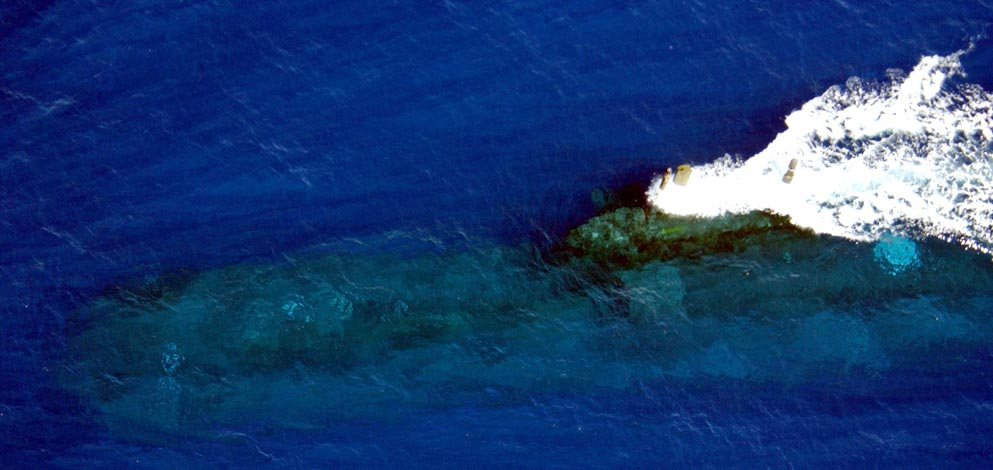

So...an Air Warfare Specialist eh?
Yep, operator, integrated system specialist and instructor.
I...
...operate sensor systems on the aircraft. Sensors like radar and electro-optics, to help us locate and identify targets and complete the mission. Whether it's finding illegal fishing boats, vessels in distress or potential submarines.
...provide first line technical support for the sensor and data management systems on the aircraft. On the ground, I lend my expertise to maintenance and software engineers, to help them rectify, improve, test and evaluate our systems and software.
...instruct new and serving AWS in using sensors and how they can best help the crew achieve the mission. Creating lessons, publishing new study material, practical instruction, annual evaluation and everything in between, it's demanding but rewarding work.
5 Squadron, Royal New Zealand Air Force
Is the primary maritime patrol and surveillance squadron of hte RNZAF.
With six P-3K2 aircraft, the squadron is charged with surveillance of the New Zealand maritime area of interest, a whopping 1/12th of the world's ocean surface. We also lend a hand to smaller island nations in the Pacific helping them patrol their fisheries and conducting search and rescue operations.
Each aircraft has a minimum crew of 12, composed of AWS like me, pilots, flight engineers, Air Warfare Officers and Air Ordnanceman.
It's a team effort, and the men and woman of the squadron do a myriad of roles including:
- Search and Rescue/Disaster Reconnaissance,
- Fisheries, Conservation and Customs Patrols,
- South Pacific Fisheries Patrols - ensuring pacific fish stocks are fished sustainably.
- Maritime Interdiction Operations - tracking illegal people smuggling, drug and arms trafficking.
- Anti-Surface Warfare - providing targeting and intelligence for navy assets.
- Anti-Submarine Warfare - tracking and targeting submarines.
